[转]从机器学习谈起
写在开始前
在本篇文章中，我将对机器学习做个概要的介绍。本文的目的是能让即便完全不了解机器学习的人也能了解机器学习，并且上手相关的实践。这篇文档也算是EasyPR开发的番外篇，从这里开始，必须对机器学习了解才能进一步介绍EasyPR的内核。当然，本文也面对一般读者，不会对阅读有相关的前提要求。
在进入正题前，我想读者心中可能会有一个疑惑：机器学习有什么重要性，以至于要阅读完这篇非常长的文章呢？
我并不直接回答这个问题前。相反，我想请大家看两张图，下图是图一：
这幅图上上的三人是当今机器学习界的执牛耳者。中间的是Geoffrey Hinton, 加拿大多伦多大学的教授，如今被聘为“Google大脑”的负责人。右边的是Yann LeCun, 纽约大学教授，如今是Facebook人工智能实验室的主任。而左边的大家都很熟悉，Andrew Ng，中文名吴恩达，斯坦福大学副教授，如今也是“百度大脑”的负责人与百度首席科学家。这三位都是目前业界炙手可热的大牛，被互联网界大鳄求贤若渴的聘请，足见他们的重要性。而他们的研究方向，则全部都是机器学习的子类–深度学习。
下图是图二：
这幅图上描述的是什么？Windows Phone上的语音助手Cortana，名字来源于《光环》中士官长的助手。相比其他竞争对手，微软很迟才推出这个服务。Cortana背后的核心技术是什么，为什么它能够听懂人的语音？事实上，这个技术正是机器学习。机器学习是所有语音助手产品(包括Apple的siri与Google的Now)能够跟人交互的关键技术。
通过上面两图，我相信大家可以看出机器学习似乎是一个很重要的，有很多未知特性的技术。学习它似乎是一件有趣的任务。实际上，学习机器学习不仅可以帮助我们了解互联网界最新的趋势，同时也可以知道伴随我们的便利服务的实现技术。
机器学习是什么，为什么它能有这么大的魔力，这些问题正是本文要回答的。同时，本文叫做“从机器学习谈起”，因此会以漫谈的形式介绍跟机器学习相关的所有内容，包括学科(如数据挖掘、计算机视觉等)，算法(神经网络，svm)等等。
本文的主要目录如下：
- 1.一个故事说明什么是机器学习
- 2.机器学习的定义
- 3.机器学习的范围
- 4.机器学习的方法
- 5.机器学习的应用–大数据
- 6.机器学习的子类–深度学习
- 7.机器学习的父类–人工智能
- 8.机器学习的思考–计算机的潜意识
- 9.总结
- 10.后记
1.一个故事说明什么是机器学习
机器学习这个词是让人疑惑的，首先它是英文名称Machine Learning(简称ML)的直译，在计算界Machine一般指计算机。这个名字使用了拟人的手法，说明了这门技术是让机器“学习”的技术。但是计算机是死的，怎么可能像人类一样“学习”呢？
传统上如果我们想让计算机工作，我们给它一串指令，然后它遵照这个指令一步步执行下去。有因有果，非常明确。但这样的方式在机器学习中行不通。机器学习根本不接受你输入的指令，相反，它接受你输入的数据! 也就是说，机器学习是一种让计算机利用数据而不是指令来进行各种工作的方法。这听起来非常不可思议，但结果上却是非常可行的。“统计”思想将在你学习“机器学习”相关理念时无时无刻不伴随，相关而不是因果的概念将是支撑机器学习能够工作的核心概念。你会颠覆对你以前所有程序中建立的因果无处不在的根本理念。
下面我通过一个故事来简单地阐明什么是机器学习。这个故事比较适合用在知乎上作为一个概念的阐明。在这里，这个故事没有展开，但相关内容与核心是存在的。如果你想简单的了解一下什么是机器学习，那么看完这个故事就足够了。如果你想了解机器学习的更多知识以及与它关联紧密的当代技术，那么请你继续往下看，后面有更多的丰富的内容。
这个例子来源于我真实的生活经验，我在思考这个问题的时候突然发现它的过程可以被扩充化为一个完整的机器学习的过程，因此我决定使用这个例子作为所有介绍的开始。这个故事称为“等人问题”。
我相信大家都有跟别人相约，然后等人的经历。现实中不是每个人都那么守时的，于是当你碰到一些爱迟到的人，你的时间不可避免的要浪费。我就碰到过这样的一个例子。
对我的一个朋友小Y而言，他就不是那么守时，最常见的表现是他经常迟到。当有一次我跟他约好3点钟在某个麦当劳见面时，在我出门的那一刻我突然想到一个问题：我现在出发合适么？我会不会又到了地点后，花上30分钟去等他？我决定采取一个策略解决这个问题。
要想解决这个问题，有好几种方法。第一种方法是采用知识：我搜寻能够解决这个问题的知识。但很遗憾，没有人会把如何等人这个问题作为知识传授，因此我不可能找到已有的知识能够解决这个问题。第二种方法是问他人：我去询问他人获得解决这个问题的能力。但是同样的，这个问题没有人能够解答，因为可能没人碰上跟我一样的情况。第三种方法是准则法：我问自己的内心，我有否设立过什么准则去面对这个问题？例如，无论别人如何，我都会守时到达。但我不是个死板的人，我没有设立过这样的规则。
事实上，我相信有种方法比以上三种都合适。我把过往跟小Y相约的经历在脑海中重现一下，看看跟他相约的次数中，迟到占了多大的比例。而我利用这来预测他这次迟到的可能性。如果这个值超出了我心里的某个界限，那我选择等一会再出发。假设我跟小Y约过5次，他迟到的次数是1次，那么他按时到的比例为80%，我心中的阈值为70%，我认为这次小Y应该不会迟到，因此我按时出门。如果小Y在5次迟到的次数中占了4次，也就是他按时到达的比例为20%，由于这个值低于我的阈值，因此我选择推迟出门的时间。这个方法从它的利用层面来看，又称为经验法。在经验法的思考过程中，我事实上利用了以往所有相约的数据。因此也可以称之为依据数据做的判断。
依据数据所做的判断跟机器学习的思想根本上是一致的。
刚才的思考过程我只考虑“频次”这种属性。在真实的机器学习中，这可能都不算是一个应用。一般的机器学习模型至少考虑两个量：一个是因变量，也就是我们希望预测的结果，在这个例子里就是小Y迟到与否的判断。另一个是自变量，也就是用来预测小Y是否迟到的量。假设我把时间作为自变量，譬如我发现小Y所有迟到的日子基本都是星期五，而在非星期五情况下他基本不迟到。于是我可以建立一个模型，来模拟小Y迟到与否跟日子是否是星期五的概率。见下图：
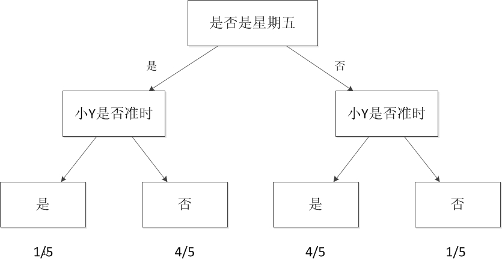
这样的图就是一个最简单的机器学习模型，称之为决策树。
当我们考虑的自变量只有一个时，情况较为简单。如果把我们的自变量再增加一个。例如小Y迟到的部分情况时是在他开车过来的时候(你可以理解为他开车水平较臭，或者路较堵)。于是我可以关联考虑这些信息。建立一个更复杂的模型，这个模型包含两个自变量与一个因变量。
再更复杂一点，小Y的迟到跟天气也有一定的原因，例如下雨的时候，这时候我需要考虑三个自变量。
如果我希望能够预测小Y迟到的具体时间，我可以把他每次迟到的时间跟雨量的大小以及前面考虑的自变量统一建立一个模型。于是我的模型可以预测值，例如他大概会迟到几分钟。这样可以帮助我更好的规划我出门的时间。在这样的情况下，决策树就无法很好地支撑了，因为决策树只能预测离散值。我们可以用节2所介绍的线型回归方法建立这个模型。
如果我把这些建立模型的过程交给电脑。比如把所有的自变量和因变量输入，然后让计算机帮我生成一个模型，同时让计算机根据我当前的情况，给出我是否需要迟出门，需要迟几分钟的建议。那么计算机执行这些辅助决策的过程就是机器学习的过程。
机器学习方法是计算机利用已有的数据(经验)，得出了某种模型(迟到的规律)，并利用此模型预测未来(是否迟到)的一种方法。
通过上面的分析，可以看出机器学习与人类思考的经验过程是类似的，不过它能考虑更多的情况，执行更加复杂的计算。事实上，机器学习的一个主要目的就是把人类思考归纳经验的过程转化为计算机通过对数据的处理计算得出模型的过程。经过计算机得出的模型能够以近似于人的方式解决很多灵活复杂的问题。
下面，我会开始对机器学习的正式介绍，包括定义、范围，方法、应用等等，都有所包含。
2.机器学习的定义
从广义上来说，机器学习是一种能够赋予机器学习的能力以此让它完成直接编程无法完成的功能的方法。但从实践的意义上来说，机器学习是一种通过利用数据，训练出模型，然后使用模型预测的一种方法。
让我们具体看一个例子。
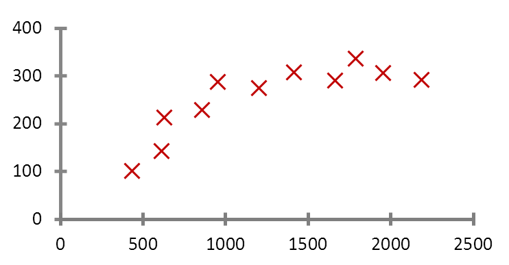
拿国民话题的房子来说。现在我手里有一栋房子需要售卖，我应该给它标上多大的价格？房子的面积是100平方米，价格是100万，120万，还是140万？
很显然，我希望获得房价与面积的某种规律。那么我该如何获得这个规律？用报纸上的房价平均数据么？还是参考别人面积相似的？无论哪种，似乎都并不是太靠谱。
我现在希望获得一个合理的，并且能够最大程度的反映面积与房价关系的规律。于是我调查了周边与我房型类似的一些房子，获得一组数据。这组数据中包含了大大小小房子的面积与价格，如果我能从这组数据中找出面积与价格的规律，那么我就可以得出房子的价格。
对规律的寻找很简单，拟合出一条直线，让它“穿过”所有的点，并且与各个点的距离尽可能的小。
通过这条直线，我获得了一个能够最佳反映房价与面积规律的规律。这条直线同时也是一个下式所表明的函数：
房价 = 面积 * a + b
上述中的a、b都是直线的参数。获得这些参数以后，我就可以计算出房子的价格。
假设a = 0.75,b = 50，则房价 = 100 * 0.75 + 50 = 125万。这个结果与我前面所列的100万，120万，140万都不一样。由于这条直线综合考虑了大部分的情况，因此从“统计”意义上来说，这是一个最合理的预测。
在求解过程中透露出了两个信息：
- 1).房价模型是根据拟合的函数类型决定的。如果是直线，那么拟合出的就是直线方程。如果是其他类型的线，例如抛物线，那么拟合出的就是抛物线方程。机器学习有众多算法，一些强力算法可以拟合出复杂的非线性模型，用来反映一些不是直线所能表达的情况。
- 2).如果我的数据越多，我的模型就越能够考虑到越多的情况，由此对于新情况的预测效果可能就越好。这是机器学习界“数据为王”思想的一个体现。一般来说(不是绝对)，数据越多，最后机器学习生成的模型预测的效果越好。
通过我拟合直线的过程，我们可以对机器学习过程做一个完整的回顾。首先，我们需要在计算机中存储历史的数据。接着，我们将这些 数据通过机器学习算法进行处理，这个过程在机器学习中叫做“训练”，处理的结果可以被我们用来对新的数据进行预测，这个结果一般称之为“模型”。对新数据 的预测过程在机器学习中叫做“预测”。“训练”与“预测”是机器学习的两个过程，“模型”则是过程的中间输出结果，“训练”产生“模型”，“模型”指导 “预测”。
让我们把机器学习的过程与人类对历史经验归纳的过程做个比对。
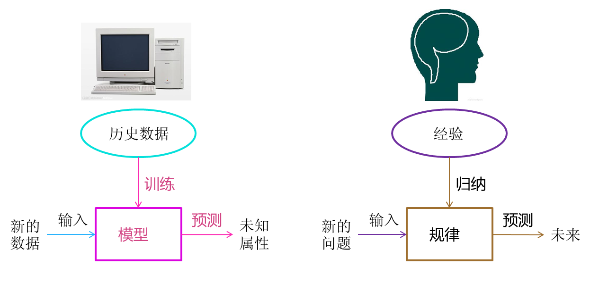
人类在成长、生活过程中积累了很多的历史与经验。人类定期地对这些经验进行“归纳”，获得了生活的“规律”。当人类遇到未知的问题或者需要对未来进行“推测”的时候，人类使用这些“规律”，对未知问题与未来进行“推测”，从而指导自己的生活和工作。
机器学习中的“训练”与“预测”过程可以对应到人类的“归纳”和“推测”过程。通过这样的对应，我们可以发现，机器学习的思想并不复杂，仅仅是对人类在生活中学习成长的一个模拟。由于机器学习不是基于编程形成的结果，因此它的处理过程不是因果的逻辑，而是通过归纳思想得出的相关性结论。
这也可以联想到人类为什么要学习历史，历史实际上是人类过往经验的总结。有句话说得很好，“历史往往不一样，但历史总是惊人的相似”。通过学习历史，我们从历史中归纳出人生与国家的规律，从而指导我们的下一步工作，这是具有莫大价值的。当代一些人忽视了历史的本来价值，而是把其作为一种宣扬功绩的手段，这其实是对历史真实价值的一种误用。
3.机器学习的范围
上文虽然说明了机器学习是什么，但是并没有给出机器学习的范围。
其实，机器学习跟模式识别，统计学习，数据挖掘，计算机视觉，语音识别，自然语言处理等领域有着很深的联系。
从范围上来说，机器学习跟模式识别，统计学习，数据挖掘是类似的，同时，机器学习与其他领域的处理技术的结合，形成了计算机视觉、语音识别、自然语言处理等交叉学科。因此，一般说数据挖掘时，可以等同于说机器学习。同时，我们平常所说的机器学习应用，应该是通用的，不仅仅局限在结构化数据，还有图像，音频等应用。
在这节对机器学习这些相关领域的介绍有助于我们理清机器学习的应用场景与研究范围，更好的理解后面的算法与应用层次。
下图是机器学习所牵扯的一些相关范围的学科与研究领域。
- 模式识别
模式识别=机器学习。两者的主要区别在于前者是从工业界发展起来的概念，后者则主要源自计算机学科。在著名的《Pattern Recognition And Machine Learning》这本书中，Christopher M. Bishop在开头是这样说的“模式识别源自工业界，而机器学习来自于计算机学科。不过，它们中的活动可以被视为同一个领域的两个方面，同时在过去的10年间，它们都有了长足的发展”。 数据挖掘
数据挖掘=机器学习+数据库。这几年数据挖掘的概念实在是太耳熟能详。几乎等同于炒作。但凡说数据挖掘都会吹嘘数据挖掘如何如何，例如从数据中挖出金子，以及将废弃的数据转化为价值等等。但是，我尽管可能会挖出金子，但我也可能挖的是“石头”啊。这个说法的意思是，数据挖掘仅仅是一种思考方式，告诉我们应该尝试从数据中挖掘出知识，但不是每个数据都能挖掘出金子的，所以不要神话它。一个系统绝对不会因为上了一个数据挖掘模块就变得无所不能(这是IBM最喜欢吹嘘的)，恰恰相反，一个拥有数据挖掘思维的人员才是关键，而且他还必须对数据有深刻的认识，这样才可能从数据中导出模式指引业务的改善。大部分数据挖掘中的算法是机器学习的算法在数据库中的优化。统计学习
统计学习近似等于机器学习。统计学习是个与机器学习高度重叠的学科。因为机器学习中的大多数方法来自统计学，甚至可以认为，统计学的发展促进机器学习的繁荣昌盛。例如著名的支持向量机算法，就是源自统计学科。但是在某种程度上两者是有分别的，这个分别在于：统计学习者重点关注的是统计模型的发展与优化，偏数学，而机器学习者更关注的是能够解决问题，偏实践，因此机器学习研究者会重点研究学习算法在计算机上执行的效率与准确性的提升。- 计算机视觉
计算机视觉=图像处理+机器学习。图像处理技术用于将图像处理为适合进入机器学习模型中的输入，机器学习则负责从图像中识别出相关的模式。计算机视觉相关的应用非常的多，例如百度识图、手写字符识别、车牌识别等等应用。这个领域是应用前景非常火热的，同时也是研究的热门方向。随着机器学习的新领域深度学习的发展，大大促进了计算机图像识别的效果，因此未来计算机视觉界的发展前景不可估量。 语音识别
语音识别=语音处理+机器学习。语音识别就是音频处理技术与机器学习的结合。语音识别技术一般不会单独使用，一般会结合自然语言处理的相关技术。目前的相关应用有苹果的语音助手siri等。自然语言处理
自然语言处理=文本处理+机器学习。自然语言处理技术主要是让机器理解人类的语言的一门领域。在自然语言处理技术中，大量使用了编译原理相关的技术，例如词法分析，语法分析等等，除此之外，在理解这个层面，则使用了语义理解，机器学习等技术。作为唯一由人类自身创造的符号，自然语言处理一直是机器学习界不断研究的方向。按照百度机器学习专家余凯的说法“听与看，说白了就是阿猫和阿狗都会的，而只有语言才是人类独有的”。如何利用机器学习技术进行自然语言的的深度理解，一直是工业和学术界关注的焦点。
可以看出机器学习在众多领域的外延和应用。机器学习技术的发展促使了很多智能领域的进步，改善着我们的生活。
4.机器学习的方法
通过上节的介绍我们知晓了机器学习的大致范围，那么机器学习里面究竟有多少经典的算法呢？在这个部分我会简要介绍一下机器学习中的经典代表方法。这部分介绍的重点是这些方法内涵的思想，数学与实践细节不会在这讨论。
- 1)、回归算法
在大部分机器学习课程中，回归算法都是介绍的第一个算法。原因有两个：一.回归算法比较简单，介绍它可以让人平滑地从统计学迁移到机器学习中。二.回归算法是后面若干强大算法的基石，如果不理解回归算法，无法学习那些强大的算法。回归算法有两个重要的子类：即线性回归和逻辑回归。
线性回归就是我们前面说过的房价求解问题。如何拟合出一条直线最佳匹配我所有的数据？一般使用“最小二乘法”来求解。“最小二乘法”的思想是这样的，假设我们拟合出的直线代表数据的真实值，而观测到的数据代表拥有误差的值。为了尽可能减小误差的影响，需要求解一条直线使所有误差的平方和最小。最小二乘法将最优问题转化为求函数极值问题。函数极值在数学上我们一般会采用求导数为0的方法。但这种做法并不适合计算机，可能求解不出来，也可能计算量太大。
计算机科学界专门有一个学科叫“数值计算”，专门用来提升计算机进行各类计算时的准确性和效率问题。例如，著名的“梯度下降”以及“牛顿法”就是数值计算中的经典算法，也非常适合来处理求解函数极值的问题。梯度下降法是解决回归模型中最简单且有效的方法之一。从严格意义上来说，由于后文中的神经网络和推荐算法中都有线性回归的因子，因此梯度下降法在后面的算法实现中也有应用。
逻辑回归是一种与线性回归非常类似的算法，但是，从本质上讲，线型回归处理的问题类型与逻辑回归不一致。线性回归处理的是数值问题，也就是最后预测出的结果是数字，例如房价。而逻辑回归属于分类算法，也就是说，逻辑回归预测结果是离散的分类，例如判断这封邮件是否是垃圾邮件，以及用户是否会点击此广告等等。
实现方面的话，逻辑回归只是对对线性回归的计算结果加上了一个Sigmoid函数，将数值结果转化为了0到1之间的概率(Sigmoid函数的图像一般来说并不直观，你只需要理解对数值越大，函数越逼近1，数值越小，函数越逼近0)，接着我们根据这个概率可以做预测，例如概率大于0.5，则这封邮件就是垃圾邮件，或者肿瘤是否是恶性的等等。从直观上来说，逻辑回归是画出了一条分类线，见下图。
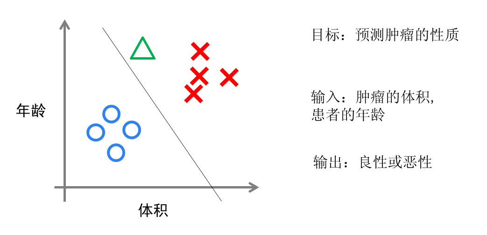
假设我们有一组肿瘤患者的数据，这些患者的肿瘤中有些是良性的(图中的蓝色点)，有些是恶性的(图中的红色点)。这里肿瘤的红蓝色可以被称作数据的“标签”。同时每个数据包括两个“特征”：患者的年龄与肿瘤的大小。我们将这两个特征与标签映射到这个二维空间上，形成了我上图的数据。
当我有一个绿色的点时，我该判断这个肿瘤是恶性的还是良性的呢？根据红蓝点我们训练出了一个逻辑回归模型，也就是图中的分类线。这时，根据绿点出现在分类线的左侧，因此我们判断它的标签应该是红色，也就是说属于恶性肿瘤。
逻辑回归算法划出的分类线基本都是线性的(也有划出非线性分类线的逻辑回归，不过那样的模型在处理数据量较大的时候效率会很低)，这意味着当两类之间的界线不是线性时，逻辑回归的表达能力就不足。下面的两个算法是机器学习界最强大且重要的算法，都可以拟合出非线性的分类线。
- 2)、神经网络
神经网络(也称之为人工神经网络，ANN)算法是80年代机器学习界非常流行的算法，不过在90年代中途衰落。现在，携着“深度学习”之势，神经网络重装归来，重新成为最强大的机器学习算法之一。
神经网络的诞生起源于对大脑工作机理的研究。早期生物界学者们使用神经网络来模拟大脑。机器学习的学者们使用神经网络进行机器学习的实验，发现在视觉与语音的识别上效果都相当好。在BP算法(加速神经网络训练过程的数值算法)诞生以后，神经网络的发展进入了一个热潮。BP算法的发明人之一是前面介绍的机器学习大牛Geoffrey Hinton(图1中的中间者)。
具体说来，神经网络的学习机理是什么？简单来说，就是分解与整合。在著名的Hubel-Wiesel试验中，学者们研究猫的视觉分析机理是这样的。
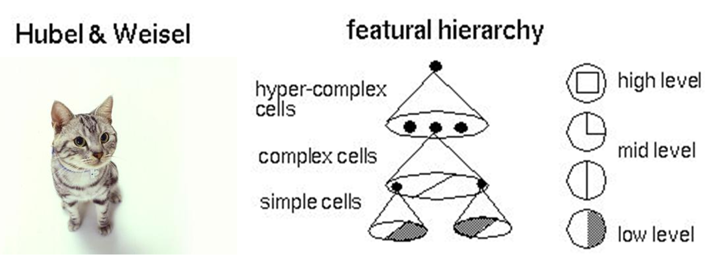
比方说，一个正方形，分解为四个折线进入视觉处理的下一层中。四个神经元分别处理一个折线。每个折线再继续被分解为两条直线，每条直线再被分解为黑白两个面。于是，一个复杂的图像变成了大量的细节进入神经元，神经元处理以后再进行整合，最后得出了看到的是正方形的结论。这就是大脑视觉识别的机理，也是神经网络工作的机理。
让我们看一个简单的神经网络的逻辑架构。在这个网络中，分成输入层，隐藏层，和输出层。输入层负责接收信号，隐藏层负责对数据的分解与处理，最后的结果被整合到输出层。每层中的一个圆代表一个处理单元，可以认为是模拟了一个神经元，若干个处理单元组成了一个层，若干个层再组成了一个网络，也就是”神经网络”。
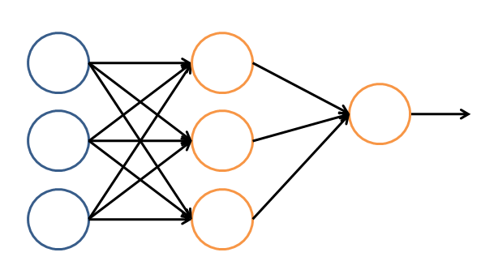
在神经网络中，每个处理单元事实上就是一个逻辑回归模型，逻辑回归模型接收上层的输入，把模型的预测结果作为输出传输到下一个层次。通过这样的过程，神经网络可以完成非常复杂的非线性分类。
下图会演示神经网络在图像识别领域的一个著名应用，这个程序叫做LeNet，是一个基于多个隐层构建的神经网络。通过LeNet可以识别多种手写数字，并且达到很高的识别精度与拥有较好的鲁棒性。
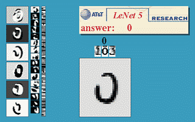
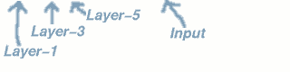
右下方的方形中显示的是输入计算机的图像，方形上方的红色字样“answer”后面显示的是计算机的输出。左边的三条竖直的图像列显示的是神经网络中三个隐藏层的输出，可以看出，随着层次的不断深入，越深的层次处理的细节越低，例如层3基本处理的都已经是线的细节了。LeNet的发明人就是前文介绍过的机器学习的大牛Yann LeCun(图1右者)。
进入90年代，神经网络的发展进入了一个瓶颈期。其主要原因是尽管有BP算法的加速，神经网络的训练过程仍然很困难。因此90年代后期支持向量机(SVM)算法取代了神经网络的地位。
- 3)、SVM（支持向量机）
支持向量机算法是诞生于统计学习界，同时在机器学习界大放光彩的经典算法。
支持向量机算法从某种意义上来说是逻辑回归算法的强化：通过给予逻辑回归算法更严格的优化条件，支持向量机算法可以获得比逻辑回归更好的分类界线。但是如果没有某类函数技术，则支持向量机算法最多算是一种更好的线性分类技术。
但是，通过跟高斯“核”的结合，支持向量机可以表达出非常复杂的分类界线，从而达成很好的的分类效果。“核”事实上就是一种特殊的函数，最典型的特征就是可以将低维的空间映射到高维的空间。
例如下图所示：
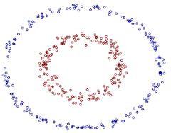
我们如何在二维平面划分出一个圆形的分类界线？在二维平面可能会很困难，但是通过“核”可以将二维空间映射到三维空间，然后使用一个线性平面就可以达成类似效果。也就是说，二维平面划分出的非线性分类界线可以等价于三维平面的线性分类界线。于是，我们可以通过在三维空间中进行简单的线性划分就可以达到在二维平面中的非线性划分效果。
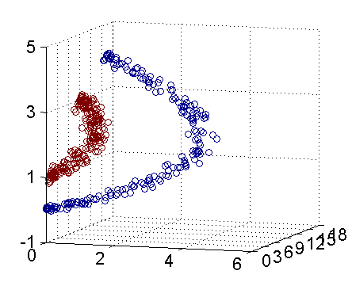
支持向量机是一种数学成分很浓的机器学习算法（相对的，神经网络则有生物科学成分）。在算法的核心步骤中，有一步证明，即将数据从低维映射到高维不会带来最后计算复杂性的提升。于是，通过支持向量机算法，既可以保持计算效率，又可以获得非常好的分类效果。因此支持向量机在90年代后期一直占据着机器学习中最核心的地位，基本取代了神经网络算法。直到现在神经网络借着深度学习重新兴起，两者之间才又发生了微妙的平衡转变。
- 4)、聚类算法
前面的算法中的一个显著特征就是我的训练数据中包含了标签，训练出的模型可以对其他未知数据预测标签。在下面的算法中，训练数据都是不含标签的，而算法的目的则是通过训练，推测出这些数据的标签。这类算法有一个统称，即无监督算法(前面有标签的数据的算法则是有监督算法)。无监督算法中最典型的代表就是聚类算法。
让我们还是拿一个二维的数据来说，某一个数据包含两个特征。我希望通过聚类算法，给他们中不同的种类打上标签，我该怎么做呢？简单来说，聚类算法就是计算种群中的距离，根据距离的远近将数据划分为多个族群。
聚类算法中最典型的代表就是K-Means算法。
- 5)、降维算法
降维算法也是一种无监督学习算法，其主要特征是将数据从高维降低到低维层次。在这里，维度其实表示的是数据的特征量的大小，例如，房价包含房子的长、宽、面积与房间数量四个特征，也就是维度为4维的数据。可以看出来，长与宽事实上与面积表示的信息重叠了，例如面积=长 × 宽。通过降维算法我们就可以去除冗余信息，将特征减少为面积与房间数量两个特征，即从4维的数据压缩到2维。于是我们将数据从高维降低到低维，不仅利于表示，同时在计算上也能带来加速。
刚才说的降维过程中减少的维度属于肉眼可视的层次，同时压缩也不会带来信息的损失(因为信息冗余了)。如果肉眼不可视，或者没有冗余的特征，降维算法也能工作，不过这样会带来一些信息的损失。但是，降维算法可以从数学上证明，从高维压缩到的低维中最大程度地保留了数据的信息。因此，使用降维算法仍然有很多的好处。
降维算法的主要作用是压缩数据与提升机器学习其他算法的效率。通过降维算法，可以将具有几千个特征的数据压缩至若干个特征。另外，降维算法的另一个好处是数据的可视化，例如将5维的数据压缩至2维，然后可以用二维平面来可视。降维算法的主要代表是PCA算法(即主成分分析算法)。
- 6)、推荐算法
推荐算法是目前业界非常火的一种算法，在电商界，如亚马逊，天猫，京东等得到了广泛的运用。推荐算法的主要特征就是可以自动向用户推荐他们最感兴趣的东西，从而增加购买率，提升效益。推荐算法有两个主要的类别：
一类是基于物品内容的推荐，是将与用户购买的内容近似的物品推荐给用户，这样的前提是每个物品都得有若干个标签，因此才可以找出与用户购买物品类似的物品，这样推荐的好处是关联程度较大，但是由于每个物品都需要贴标签，因此工作量较大。
另一类是基于用户相似度的推荐，则是将与目标用户兴趣相同的其他用户购买的东西推荐给目标用户，例如小A历史上买了物品B和C，经过算法分析，发现另一个与小A近似的用户小D购买了物品E，于是将物品E推荐给小A。
两类推荐都有各自的优缺点，在一般的电商应用中，一般是两类混合使用。推荐算法中最有名的算法就是协同过滤算法。
- 7)、其他
除了以上算法之外，机器学习界还有其他的如高斯判别，朴素贝叶斯，决策树等等算法。但是上面列的六个算法是使用最多，影响最广，种类最全的典型。机器学习界的一个特色就是算法众多，发展百花齐放。
下面做一个总结，按照训练的数据有无标签，可以将上面算法分为监督学习算法和无监督学习算法，但推荐算法较为特殊，既不属于监督学习，也不属于非监督学习，是单独的一类。
| 分类 | 说明 |
|---|---|
| 监督学习算法 | 线性回归，逻辑回归，神经网络，SVM |
| 无监督学习算法 | 聚类算法，降维算法 |
| 特殊算法 | 推荐算法 |
除了这些算法以外，有一些算法的名字在机器学习领域中也经常出现。但他们本身并不算是一个机器学习算法，而是为了解决某个子问题而诞生的。你可以理解他们为以上算法的子算法，用于大幅度提高训练过程。其中的代表有：
梯度下降法，主要运用在线型回归，逻辑回归，神经网络，推荐算法中；
牛顿法，主要运用在线型回归中；
BP算法，主要运用在神经网络中；
SMO算法，主要运用在SVM中。
5.机器学习的应用–大数据
说完机器学习的方法，下面要谈一谈机器学习的应用了。无疑，在2010年以前，机器学习的应用在某些特定领域发挥了巨大的作用，如车牌识别，网络攻击防范，手写字符识别等等。但是，从2010年以后，随着大数据概念的兴起，机器学习大量的应用都与大数据高度耦合，几乎可以认为大数据是机器学习应用的最佳场景。
譬如，但凡你能找到的介绍大数据魔力的文章，都会说大数据如何准确准确预测到了某些事。例如经典的Google利用大数据预测了H1N1在美国某小镇的爆发。
百度预测2014年世界杯，从淘汰赛到决赛全部预测正确。
这些实在太神奇了，那么究竟是什么原因导致大数据具有这些魔力的呢？简单来说，就是机器学习技术。正是基于机器学习技术的应用，数据才能发挥其魔力。
大数据的核心是利用数据的价值，机器学习是利用数据价值的关键技术，对于大数据而言，机器学习是不可或缺的。相反，对于机器学习而言，越多的数据会越 可能提升模型的精确性，同时，复杂的机器学习算法的计算时间也迫切需要分布式计算与内存计算这样的关键技术。因此，机器学习的兴盛也离不开大数据的帮助。 大数据与机器学习两者是互相促进，相依相存的关系。
机器学习与大数据紧密联系。但是，必须清醒的认识到，大数据并不等同于机器学习，同理，机器学习也不等同于大数据。大数据中包含有分布式计算，内存数据库，多维分析等等多种技术。单从分析方法来看，大数据也包含以下四种分析方法：
- 大数据，小分析：即数据仓库领域的OLAP分析思路，也就是多维分析思想。
- 大数据，大分析：这个代表的就是数据挖掘与机器学习分析法。
- 流式分析：这个主要指的是事件驱动架构。
- 查询分析：经典代表是NoSQL数据库。
也就是说，机器学习仅仅是大数据分析中的一种而已。尽管机器学习的一些结果具有很大的魔力，在某种场合下是大数据价值最好的说明。但这并不代表机器学习是大数据下的唯一的分析方法。
机器学习与大数据的结合产生了巨大的价值。基于机器学习技术的发展，数据能够“预测”。对人类而言，积累的经验越丰富，阅历也广泛，对未来的判断越准确。例如常说的“经验丰富”的人比“初出茅庐”的小伙子更有工作上的优势，就在于经验丰富的人获得的规律比他人更准确。而在机器学习领域，根据著名的一个实验，有效的证实了机器学习界一个理论：即机器学习模型的数据越多，机器学习的预测的效率就越好。见下图：
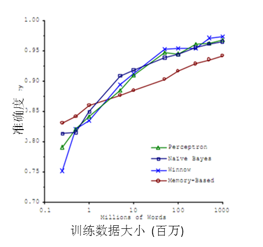
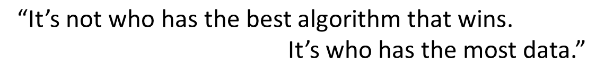
通过这张图可以看出，各种不同算法在输入的数据量达到一定级数后，都有相近的高准确度。于是诞生了机器学习界的名言： 成功的机器学习应用不是拥有最好的算法，而是拥有最多的数据！
在大数据的时代，有好多优势促使机器学习能够应用更广泛。例如随着物联网和移动设备的发展，我们拥有的数据越来越多，种类也包括图片、文本、视频等非结构化数据，这使得机器学习模型可以获得越来越多的数据。同时大数据技术中的分布式计算Map-Reduce使得机器学习的速度越来越快，可以更方便的使用。种种优势使得在大数据时代，机器学习的优势可以得到最佳的发挥。
6.机器学习的子类–深度学习
近来，机器学习的发展产生了一个新的方向，即“深度学习”。
虽然深度学习这四字听起来颇为高大上，但其理念却非常简单，就是传统的神经网络发展到了多隐藏层的情况。
在上文介绍过，自从90年代以后，神经网络已经消寂了一段时间。但是BP算法的发明人Geoffrey Hinton一直没有放弃对神经网络的研究。由于神经网络在隐藏层扩大到两个以上，其训练速度就会非常慢，因此实用性一直低于支持向量机。2006年，Geoffrey Hinton在科学杂志《Science》上发表了一篇文章，论证了两个观点：
- 多隐层的神经网络具有优异的特征学习能力，学习得到的特征对数据有更本质的刻画，从而有利于可视化或分类；
- 深度神经网络在训练上的难度，可以通过“逐层初始化” 来有效克服。
通过这样的发现，不仅解决了神经网络在计算上的难度，同时也说明了深层神经网络在学习上的优异性。从此，神经网络重新成为了机器学习界中的主流强大学习技术。同时，具有多个隐藏层的神经网络被称为深度神经网络，基于深度神经网络的学习研究称之为深度学习。
由于深度学习的重要性质，在各方面都取得极大的关注，按照时间轴排序，有以下四个标志性事件值得一说：
2012年6月，《纽约时报》披露了Google Brain项目，这个项目是由Andrew Ng和Map-Reduce发明人Jeff Dean共同主导，用16000个CPU Core的并行计算平台训练一种称为“深层神经网络”的机器学习模型，在语音识别和图像识别等领域获得了巨大的成功。Andrew Ng就是文章开始所介绍的机器学习的大牛(图1中左者)。
2012年11月，微软在中国天津的一次活动上公开演示了一个全自动的同声传译系统，讲演者用英文演讲，后台的计算机一气呵成自动完成语音识别、英中机器翻译，以及中文语音合成，效果非常流畅，其中支撑的关键技术是深度学习；
2013年1月，在百度的年会上，创始人兼CEO李彦宏高调宣布要成立百度研究院，其中第一个重点方向就是深度学习，并为此而成立深度学习研究院(IDL)。
2013年4月，《麻省理工学院技术评论》杂志将深度学习列为2013年十大突破性技术(Breakthrough Technology)之首。
文章开头所列的三位机器学习的大牛，不仅都是机器学习界的专家，更是深度学习研究领域的先驱。因此，使他们担任各个大型互联网公司技术掌舵者的原因不仅在于他们的技术实力，更在于他们研究的领域是前景无限的深度学习技术。
目前业界许多的图像识别技术与语音识别技术的进步都源于深度学习的发展，除了本文开头所提的Cortana等语音助手，还包括一些图像识别应用，其中典型的代表就是下图的百度识图功能。
深度学习属于机器学习的子类。基于深度学习的发展极大的促进了机器学习的地位提高，更进一步地，推动了业界对机器学习父类人工智能梦想的再次重视。
7.机器学习的父类–人工智能
人工智能是机器学习的父类。深度学习则是机器学习的子类。如果把三者的关系用图来表明的话，则是下图：
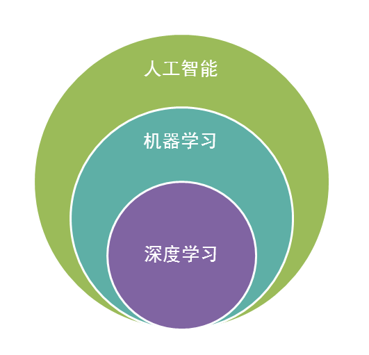
毫无疑问，人工智能(AI)是人类所能想象的科技界最突破性的发明了，某种意义上来说，人工智能就像游戏最终幻想的名字一样，是人类对于科技界的最终梦想。从50年代提出人工智能的理念以后，科技界，产业界不断在探索，研究。这段时间各种小说、电影都在以各种方式展现对于人工智能的想象。人类可以发明类似于人类的机器，这是多么伟大的一种理念！但事实上，自从50年代以后，人工智能的发展就磕磕碰碰，未有见到足够震撼的科学技术的进步。
总结起来，人工智能的发展经历了如下若干阶段，从早期的逻辑推理，到中期的专家系统，这些科研进步确实使我们离机器的智能有点接近了，但还有一大段距离。直到机器学习诞生以后，人工智能界感觉终于找对了方向。基于机器学习的图像识别和语音识别在某些垂直领域达到了跟人相媲美的程度。机器学习使人类第一次如此接近人工智能的梦想。
事实上，如果我们把人工智能相关的技术以及其他业界的技术做一个类比，就可以发现机器学习在人工智能中的重要地位不是没有理由的。
人类区别于其他物体，植物，动物的最主要区别，作者认为是“智慧”。而智慧的最佳体现是什么？
是计算能力么，应该不是，心算速度快的人我们一般称之为天才。
是反应能力么，也不是，反应快的人我们称之为灵敏。
是记忆能力么，也不是，记忆好的人我们一般称之为过目不忘。
是推理能力么，这样的人我也许会称他智力很高，类似“福尔摩斯”，但不会称他拥有智慧。
是知识能力么，这样的人我们称之为博闻广，也不会称他拥有智慧。
想想看我们一般形容谁有大智慧？圣人，诸如庄子，老子等。智慧是对生活的感悟，是对人生的积淀与思考，这与我们机器学习的思想何其相似？通过经验获取规律，指导人生与未来。没有经验就没有智慧。
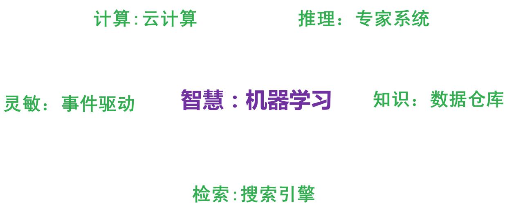
那么，从计算机来看，以上的种种能力都有种种技术去应对。
例如计算能力我们有分布式计算，反应能力我们有事件驱动架构，检索能力我们有搜索引擎，知识存储能力我们有数据仓库，逻辑推理能力我们有专家系统，但是，唯有对应智慧中最显著特征的归纳与感悟能力，只有机器学习与之对应。这也是机器学习能力最能表征智慧的根本原因。
让我们再看一下机器人的制造，在我们具有了强大的计算，海量的存储，快速的检索，迅速的反应，优秀的逻辑推理后我们如果再配合上一个强大的智慧大脑，一个真正意义上的人工智能也许就会诞生，这也是为什么说在机器学习快速发展的现在，人工智能可能不再是梦想的原因。
人工智能的发展可能不仅取决于机器学习，更取决于前面所介绍的深度学习，深度学习技术由于深度模拟了人类大脑的构成，在视觉识别与语音识别上显著性的突破了原有机器学习技术的界限，因此极有可能是真正实现人工智能梦想的关键技术。无论是谷歌大脑还是百度大脑，都是通过海量层次的深度学习网络所构成的。也许借助于深度学习技术，在不远的将来，一个具有人类智能的计算机真的有可能实现。
最后再说一下题外话，由于人工智能借助于深度学习技术的快速发展，已经在某些地方引起了传统技术界达人的担忧。真实世界的“钢铁侠”，特斯拉CEO马斯克就是其中之一。最近马斯克在参加MIT讨论会时，就表达了对于人工智能的担忧。“人工智能的研究就类似于召唤恶魔，我们必须在某些地方加强注意。”
尽管马斯克的担心有些危言耸听，但是马斯克的推理不无道理。“如果人工智能想要消除垃圾邮件的话，可能它最后的决定就是消灭人类。”马斯克认为预防此类现象的方法是引入政府的监管。在这里作者的观点与马斯克类似，在人工智能诞生之初就给其加上若干规则限制可能有效，也就是不应该使用单纯的机器学习，而应该是机器学习与规则引擎等系统的综合能够较好的解决这类问题。因为如果学习没有限制，极有可能进入某个误区，必须要加上某些引导。正如人类社会中，法律就是一个最好的规则，杀人者死就是对于人类在探索提高生产力时不可逾越的界限。
在这里，必须提一下这里的规则与机器学习引出的规律的不同，规律不是一个严格意义的准则，其代表的更多是概率上的指导，而规则则是神圣不可侵犯，不可修改的。规律可以调整，但规则是不能改变的。有效的结合规律与规则的特点，可以引导出一个合理的，可控的学习型人工智能。
8.机器学习的思考–计算机的潜意识
最后，作者想谈一谈关于机器学习的一些思考。主要是作者在日常生活总结出来的一些感悟。
回想一下我在节1里所说的故事，我把小Y过往跟我相约的经历做了一个罗列。但是这种罗列以往所有经历的方法只有少数人会这么做，大部分的人采用的是更直接的方法，即利用直觉。那么，直觉是什么？其实直觉也是你在潜意识状态下思考经验后得出的规律。就像你通过机器学习算法，得到了一个模型，那么你下次只要直接使用就行了。那么这个规律你是什么时候思考的？可能是在你无意识的情况下，例如睡觉，走路等情况。这种时候，大脑其实也在默默地做一些你察觉不到的工作。
这种直觉与潜意识，我把它与另一种人类思考经验的方式做了区分。如果一个人勤于思考，例如他会每天做一个小结，譬如“吾日三省吾身”，或者他经常与同伴讨论最近工作的得失，那么他这种训练模型的方式是直接的，明意识的思考与归纳。这样的效果很好，记忆性强，并且更能得出有效反应现实的规律。但是大部分的人可能很少做这样的总结，那么他们得出生活中规律的方法使用的就是潜意识法。
举一个作者本人关于潜意识的例子。作者本人以前没开过车，最近一段时间买了车后，天天开车上班。我每天都走固定的路线。有趣的是，在一开始的几天，我非常紧张的注意着前方的路况，而现在我已经在无意识中就把车开到了目标。这个过程中我的眼睛是注视着前方的，我的大脑是没有思考，但是我手握着的方向盘会自动的调整方向。也就是说。随着我开车次数的增多，我已经把我开车的动作交给了潜意识。这是非常有趣的一件事。在这段过程中，我的大脑将前方路况的图像记录了下来，同时大脑也记忆了我转动方向盘的动作。经过大脑自己的潜意识思考，最后生成的潜意识可以直接根据前方的图像调整我手的动作。假设我们将前方的录像交给计算机，然后让计算机记录与图像对应的驾驶员的动作。经过一段时间的学习，计算机生成的机器学习模型就可以进行自动驾驶了。这很神奇，不是么。其实包括Google、特斯拉在内的自动驾驶汽车技术的原理就是这样。
除了自动驾驶汽车以外，潜意识的思想还可以扩展到人的交际。譬如说服别人，一个最佳的方法就是给他展示一些信息，然后让他自己去归纳得出我们想要的结论。这就好比在阐述一个观点时，用一个事实，或者一个故事，比大段的道理要好很多。古往今来，但凡优秀的说客，无不采用的是这种方法。春秋战国时期，各国合纵连横，经常有各种说客去跟一国之君交流，直接告诉君主该做什么，无异于自寻死路，但是跟君主讲故事，通过这些故事让君主恍然大悟，就是一种正确的过程。这里面有许多杰出的代表，如墨子，苏秦等等。
基本上所有的交流过程，使用故事说明的效果都要远胜于阐述道义之类的效果好很多。为什么用故事的方法比道理或者其他的方法好很多，这是因为在人成长的过程，经过自己的思考，已经形成了很多规律与潜意识。如果你告诉的规律与对方的不相符，很有可能出于保护，他们会本能的拒绝你的新规律，但是如果你跟他讲一个故事，传递一些信息，输送一些数据给他，他会思考并自我改变。他的思考过程实际上就是机器学习的过程，他把新的数据纳入到他的旧有的记忆与数据中，经过重新训练。如果你给出的数据的信息量非常大，大到调整了他的模型，那么他就会按照你希望的规律去做事。有的时候，他会本能的拒绝执行这个思考过程，但是数据一旦输入，无论他希望与否，他的大脑都会在潜意识状态下思考，并且可能改变他的看法。
如果计算机也拥有潜意识(正如本博客的名称一样)，那么会怎么样？譬如让计算机在工作的过程中，逐渐产生了自身的潜意识，于是甚至可以在你不需要告诉它做什么时它就会完成那件事。这是个非常有意思的设想，这里留给各位读者去发散思考吧。
9.总结
本文首先介绍了互联网界与机器学习大牛结合的趋势，以及使用机器学习的相关应用，接着以一个“等人故事”展开对机器学习的介绍。介绍中首先是机器学习的概念与定义，然后是机器学习的相关学科，机器学习中包含的各类学习算法，接着介绍机器学习与大数据的关系，机器学习的新子类深度学习，最后探讨了一下机器学习与人工智能发展的联系以及机器学习与潜意识的关联。经过本文的介绍，相信大家对机器学习技术有一定的了解，例如机器学习是什么，它的内核思想是什么(即统计和归纳)，通过了解机器学习与人类思考的近似联系可以知晓机器学习为什么具有智慧能力的原因等等。其次，本文漫谈了机器学习与外延学科的关系，机器学习与大数据相互促进相得益彰的联系，机器学习界最新的深度学习的迅猛发展，以及对于人类基于机器学习开发智能机器人的一种展望与思考，最后作者简单谈了一点关于让计算机拥有潜意识的设想。
机器学习是目前业界最为Amazing与火热的一项技术，从网上的每一次淘宝的购买东西，到自动驾驶汽车技术，以及网络攻击抵御系统等等，都有机器学习的因子在内，同时机器学习也是最有可能使人类完成AI dream的一项技术，各种人工智能目前的应用，如微软小冰聊天机器人，到计算机视觉技术的进步，都有机器学习努力的成分。作为一名当代的计算机领域的开发或管理人员，以及身处这个世界，使用者IT技术带来便利的人们，最好都应该了解一些机器学习的相关知识与概念，因为这可以帮你更好的理解为你带来莫大便利技术的背后原理，以及让你更好的理解当代科技的进程。
10.后记
这篇文档花了作者两个月的时间，终于在2014年的最后一天的前一天基本完成。通过这篇文章，作者希望对机器学习在国内的普及做一点贡献，同时也是作者本人自己对于所学机器学习知识的一个融汇贯通，整体归纳的提高过程。作者把这么多的知识经过自己的大脑思考，训练出了一个模型，形成了这篇文档，可以说这也是一种机器学习的过程吧(笑)。
作者所在的行业会接触到大量的数据，因此对于数据的处理和分析是平常非常重要的工作，机器学习课程的思想和理念对于作者日常的工作指引作用极大，几乎导致了作者对于数据价值的重新认识。想想半年前，作者还对机器学习似懂非懂，如今也可以算是一个机器学习的Expert了(笑)。但作者始终认为，机器学习的真正应用不是通过概念或者思想的方式，而是通过实践。只有当把机器学习技术真正应用时，才可算是对机器学习的理解进入了一个层次。正所谓再“阳春白雪”的技术，也必须落到“下里巴人”的场景下运用。目前有一种风气，国内外研究机器学习的某些学者，有一种高贵的逼格，认为自己的研究是普通人无法理解的，但是这样的理念是根本错误的，没有在真正实际的地方发挥作用，凭什么证明你的研究有所价值呢？作者认为必须将高大上的技术用在改变普通人的生活上，才能发挥其根本的价值。一些简单的场景，恰恰是实践机器学习技术的最好地方。
参考文献
转载请注明来源，欢迎对文章中的引用来源进行考证，欢迎指出任何有错误或不够清晰的表达。可以在下面评论区评论，也可以邮件至 [ yehuohan@gmail.com ]
文章标题:[转]从机器学习谈起
本文作者:z000tech
发布时间:2018-03-21, 17:20:29
最后更新:2019-09-18, 22:37:54
原始链接:http://yehuohan.github.io/2018/03/21/笔记/Others/从机器学习谈起/版权声明: "署名-非商用-相同方式共享 4.0" 转载请保留原文链接及作者。